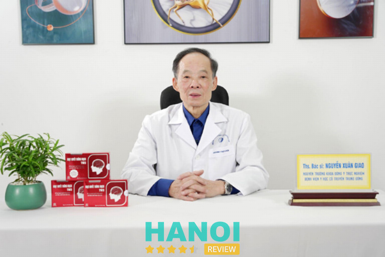
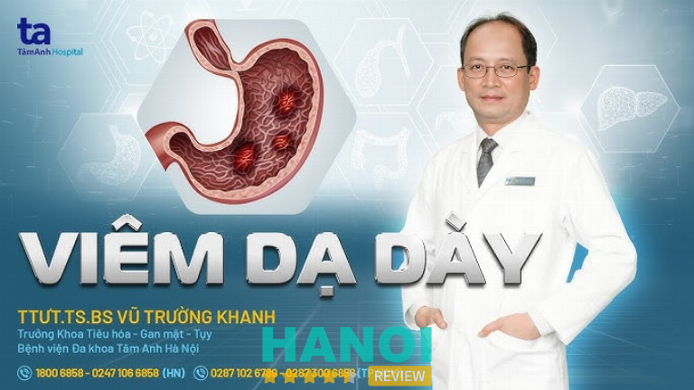

10 Bác sĩ chữa bệnh dạ dày tại Hà Nội nổi tiếng hiệu quả, uy tín
Hoạt động nhiều năm với kinh nghiệm chuyên môn vững vàng, các bác sĩ chữa bệnh dạ dày tại Hà Nội hiện nay đều đang giữ các chức vụ quan trọng tại nhiều bệnh viện, phòng khám lớn trong khu vực. Bệnh nhân khi thăm khám trực tiếp với bác sĩ chuyên khoa này có thể hoàn toàn yên tâm về hiệu quả điều trị, cam kết thời gian hồi phục nhanh chóng.
Top 10 Bác sĩ chữa bệnh dạ dày tại Hà Nội chuyên môn cao
Với sự phát triển của y học hiện đại, cùng các trang mạng truyền thông trực tuyến việc tìm kiếm bác sĩ chuyên khoa dạ dày uy tín đã không còn khó khăn. Và bài viết này sẽ giúp mọi người tìm được bác sĩ chữa bệnh dạ dày hàng đầu tại Hà Nội.
Bác sĩ Nguyễn Công Long
PGS.TS.BS. Nguyễn Công Long là một trong những bác sĩ giỏi đầu ngành tại Hà Nội có hơn 30 năm kinh nghiệm trong việc điều trị các bệnh lý liên quan đến dạ dày. Suốt thời gian hoạt động ông đã điều trị thành công hàng ngàn ca bệnh khó, bao gồm các bệnh lý như viêm dạ dày, ung thư dạ dày,…
Bằng kinh nghiệm chuyên môn của mình đến nay BS. Nguyễn Công Long đã giữ chức vụ Giám đốc Trung tâm Tiêu hóa – Gan mật của Bệnh viện Bạch Mai, nơi ông tham gia điều trị và nghiên cứu các bệnh lý tiêu hóa phức tạp. Bác sĩ cũng từng là người có nhiều năm kinh nghiệm trong việc giảng dạy và đào tạo các thế hệ bác sĩ trẻ.
Với sự tận tâm và kiến thức sâu rộng, Bác sĩ Long đã không ngừng nâng cao chuyên môn và cập nhật các tiến bộ mới trong y học để mang lại hiệu quả tối đa cho người bệnh dạ dày. Theo thông tin được biết chi phí khám với bác sĩ thường là 450.000đ, chưa bao gồm các chi phí xét nghiệm, chụp chiếu hoặc nội soi.
Để được thăm khám trực tiếp với Bác sĩ Long mọi người cần phải đặt lịch hẹn trước. Bệnh nhân cũng có thể đến Khoa Tiêu hóa, tầng 3 tòa nhà Việt Nhật, Bệnh viện Bạch Mai để thăm khám.
Thời gian thăm khám tại bệnh viện bắt đầu sáng từ 8h00 đến 11h30 và chiều 13h30 đến 16h các ngày từ thứ 2 đến thứ 6, thứ 7 sẽ bắt đầu từ 9h00 đến 11h30 sáng và chiều từ 13h00 đến 16h00.
Thông tin liên hệ:
- Địa chỉ: Số 78 Giải Phóng, Phương Mai, Q. Đống Đa, Hà Nội
- Điện thoại: 02439275568
- Gmail: Tieuhoabachmai@gmail.com
- Website: tieuhoabachmai.vn
- Fanpage: FB.com/tieuhoaganmatbvb
Bác sĩ Hà Văn Quyết
Giáo sư, Tiến sĩ, Bác sĩ Hà Văn Quyết là một trong những chuyên gia hàng đầu trong lĩnh vực tiêu hóa tại Việt Nam, đặc biệt nổi bật trong việc điều trị các bệnh lý dạ dày. Có nhiều năm kinh nghiệm trong ngành bác sĩ Quyết đã có nhiều đóng góp quan trọng trong công tác nghiên cứu và điều trị bệnh dạ dày cho bệnh nhân.
Hiện nay, GS. TS. BS Hà Văn Quyết đang giữ chức Giám đốc Trung tâm Tiêu hóa – Hệ thống Y tế Hưng Việt, đồng thời là Giám đốc Bệnh viện Đại học Y Hà Nội và Phó Giám đốc phụ trách Chuyên môn tại Bệnh viện Việt Đức.
Bên cạnh đó ông còn bác sĩ chuyên khoa Ngoại Tiêu hóa và Nội soi tiêu hóa, một trong những người tiên phong trong việc áp dụng các kỹ thuật điều trị tiên tiến vào công tác chữa bệnh dạ dày.
Bác sĩ đặc biệt chuyên sâu vào điều trị các bệnh như trào ngược dạ dày thực quản, viêm loét dạ dày, ung thư dạ dày, viêm loét đại tràng, ung thư đại tràng, và hội chứng ruột kích thích,….
Một trong những điểm đặc biệt trong phong cách làm việc của bác sĩ Hà Văn Quyết là sự kết hợp giữa kiến thức y học vững vàng và ứng dụng các kỹ thuật tiên tiến trong điều trị. Bác sĩ Quyết luôn tận dụng các phương pháp phẫu thuật, nội soi hiện đại và kết hợp với việc chăm sóc tận tâm để mang lại kết quả tốt nhất cho bệnh nhân.
Thông tin liên hệ:
- Địa chỉ: Số 34 Đ. Đại Cồ Việt, Lê Đại Hành, Q. Hai Bà Trưng, Hà Nội
- Điện thoại: 024 6250 0707
- Gmail: info@benhvienhungviet.vn
- Website: benhvienungbuouhungviet.vn
- Fanpage: FB.com/hungviet.official/
Bác sĩ Phạm Hoàng Hà
Phó Giáo sư – Tiến sĩ Phạm Hoàng Hà là một trong những chuyên gia hàng đầu tại Bệnh viện Hữu nghị Việt Đức, với hơn 19 năm kinh nghiệm trong lĩnh vực phẫu thuật tiêu hóa, điều trị bệnh dạ dày.
Hiện nay, bác sĩ Hà đang giữ vị trí Trưởng khoa Phẫu thuật Tiêu hóa bệnh viện Việt Đức và Trưởng phòng Đào tạo, Trung tâm Đào tạo và Chỉ đạo tuyến tại Bệnh viện Hữu nghị Việt Đức. Với chuyên môn sâu sắc và nhiều năm làm việc tại một trong những bệnh viện uy tín nhất cả nước, bác sĩ Hà đã đóng góp rất nhiều vào công tác khám chữa bệnh cho người dân.
Bác sĩ Phạm Hoàng Hà nổi bật với thế mạnh trong phẫu thuật nội soi tiêu hóa và phẫu thuật tụy, hai lĩnh vực đòi hỏi sự chính xác cao và tay nghề vững vàng. Ông đã thực hiện thành công hàng ngàn ca phẫu thuật điều trị các bệnh lý về dạ dày, đại tràng, tụy và các bệnh lý tiêu hóa phức tạp.
Bác sĩ Hà cũng là một trong những người tiên phong trong việc ứng dụng các kỹ thuật phẫu thuật nội soi hiện đại, giúp giảm thiểu đau đớn cho bệnh nhân, rút ngắn thời gian hồi phục và tối ưu hóa kết quả điều trị.
Với sự tận tâm và kinh nghiệm phong phú, bác sĩ Phạm Hoàng Hà luôn được bệnh nhân tin tưởng và đánh giá cao trong việc điều trị các bệnh lý dạ dày. Đặc biệt, ông có khả năng xử lý các ca bệnh phức tạp, giúp nhiều bệnh nhân khỏi bệnh và phục hồi sức khỏe nhanh chóng.
Thời gian thăm khám tại bệnh viện từ thứ 2 đến thứ 7 vào sáng từ 7h00 – 12h00 và chiều 13h30 – 16h30.
Thông tin liên hệ:
- Địa chỉ: Số 40 Tràng Thi, Q. Hoàn Kiếm, Hà Nội
- Điện thoại: 024 3825 3531
- Gmail: congtacxahoibvvd@gmail.com
- Website: benhvienvietduc.org
- Fanpage: FB.com/100064661177411
Bác sĩ Nguyễn Thúy Vinh
PGS.TS Bác sĩ Nguyễn Thúy Vinh là một trong những chuyên gia hàng đầu trong lĩnh vực tiêu hóa. Với hơn 34 năm kinh nghiệm trong nghề, bà không chỉ là một bác sĩ xuất sắc mà còn là người có nhiều đóng góp quan trọng trong lĩnh vực y học.
Hiện tại, PGS.TS Nguyễn Thúy Vinh đang giữ chức vụ Giám đốc Trung tâm Tiêu hóa tại Bệnh viện E, đồng thời cũng là một trong những chuyên gia điều trị bệnh dạ dày tiêu biểu tại bệnh viện này.
Với bề dày kinh nghiệm, bác sĩ Nguyễn Thúy Vinh đã khám và điều trị cho hàng nghìn bệnh nhân mắc các bệnh lý dạ dày phức tạp, từ bệnh viêm loét dạ dày, bệnh trào ngược dạ dày thực quản, đến các bệnh lý như ung thư dạ dày, đại tràng,…
Dù là một bác sĩ có chuyên môn cao và nhiều thành tích nổi bật, PGS.TS Nguyễn Thúy Vinh luôn chú trọng đến sự tận tâm và gần gũi trong quá trình khám và điều trị cho bệnh nhân. Với phương châm làm việc cẩn trọng, bác sĩ luôn khuyến khích bệnh nhân chủ động chia sẻ triệu chứng và tình trạng của mình để có thể đưa ra phương án điều trị tốt nhất.
Tuy nhiên, vì lịch làm việc bận rộn, bệnh nhân cần chủ động hơn trong việc đặt lịch khám, cung cấp thông tin về tình trạng bệnh của mình.
Thông tin liên hệ:
- Địa chỉ: Số 89 phố Trần Cung, P. Nghĩa Tân, Q. Cầu Giấy, Hà Nội
- Điện thoại: 1900 1548
- Gmail: bvetuvanonline@gmail.com
- Website: benhviene.com
- Fanpage: FB.com/benhviene.89trancung
Bác sĩ Nguyễn Xuân Giao
ThS.BS. Nguyễn Xuân Giao được biết đến là một trong những chuyên gia y học cổ truyền nổi bật với hơn 30 năm kinh nghiệm trong việc điều trị các bệnh lý tiêu hóa, đặc biệt là bệnh dạ dày.
Ông đã chữa trị thành công nhiều trường hợp bệnh khó, sử dụng các bài thuốc cổ truyền đặc biệt được kế thừa từ gia đình. ThS.BS. Nguyễn Xuân Giao từng đảm nhận nhiều vị trí quan trọng trong ngành y, bao gồm Trưởng khoa Đông y thực nghiệm và Khoa Lão tại Bệnh viện Y học cổ truyền Trung ương.

Hiện nay, ông đang công tác tại Natural Clinic, nơi ông trực tiếp khám và điều trị các bệnh lý liên quan đến dạ dày, đau cơ xương khớp, và bệnh trĩ. Ngoài ra, ông còn có phòng khám Y học cổ truyền hoạt động từ năm 2018 và đã nhận được sự tin tưởng của đông đảo bệnh nhân.
Với khả năng kết hợp giữa những tinh hoa của y học cổ truyền và phương pháp điều trị hiện đại, ông đã giúp nhiều bệnh nhân vượt qua bệnh tật, trong đó có các ca bệnh dạ dày mãn tính, viêm loét dạ dày, trào ngược dạ dày thực quản.
Với hơn ba thập kỷ kinh nghiệm và thành công trong công tác khám chữa bệnh, ThS.BS. Nguyễn Xuân Giao là một trong những bác sĩ y học cổ truyền đáng tin cậy mà nhiều bệnh nhân lựa chọn khi gặp vấn đề về sức khỏe tiêu hóa.
Thông tin liên hệ:
- Địa chỉ: Số 50 Phố Hàng Bài, Hàng Bài, Q. Hoàn Kiếm, Hà Nội
- Điện thoại: 087 6560 594
- Gmail: nguyenxuangiao@gmail.com
Bác sĩ Chuyên khoa II Kiều Thị Minh Nguyệt
ThS.BS. Kiều Thị Minh Nguyệt có hơn 45 năm kinh nghiệm trong lĩnh vực y tế, đặc biệt là trong khám và điều trị các bệnh lý dạ dày. Bằng chuyên môn sâu rộng và nhiều năm công tác tại các bệnh viện lớn, bác sĩ Minh Nguyệt đã giúp hàng ngàn bệnh nhân cải thiện sức khỏe và vượt qua những bệnh lý phức tạp.
Bác sĩ Kiều Thị Minh Nguyệt tốt nghiệp BSKII tại Học Viện Quân Y và đã trải qua quá trình công tác lâu dài ở nhiều vị trí quan trọng. Bà từng đảm nhận chức vụ Chủ nhiệm khoa Nội Tiêu hóa tại Viện Y học Phòng không – Không quân, bác sĩ tại khoa Khám bệnh – Bệnh viện Quân y 103 và Phó giám đốc chuyên môn Bệnh viện 16A Hà Đông.
Trong suốt sự nghiệp của mình, bác sĩ Minh Nguyệt đã điều trị hiệu quả nhiều bệnh nhân mắc các bệnh lý đường tiêu hóa như viêm loét dạ dày, hội chứng trào ngược dạ dày thực quản, bệnh lý đại tràng và bệnh lý Helicobacter pylori (HP).
Hiện nay, bác sĩ Kiều Thị Minh Nguyệt đang công tác tại Medelab một địa chỉ khám sức khỏe tổng quát tại Hà Nội. Tại đây người bệnh sẽ được bác sĩ thăm khám và xét nghiệm chất lượng cao với máy móc hiện đại, đảm bảo chuẩn ISO.
Thủ tục khám chữa bệnh cũng rất nhanh chóng, tiện lợi, giúp người bệnh tiết kiệm thời gian và mang lại kết quả chính xác.
Thông tin liên hệ:
- Địa chỉ: Số 88 Nguyễn Lương Bằng, Q. Đống Đa, Hà Nội
- Điện thoại: 1900 8006
- Website: medelab.vn
- Fanpage: FB.com/medelabclinicvietnam
Bác sĩ Vũ Trường Khanh
TTƯT.TS.BS Vũ Trường Khanh là một trong những bác sĩ hàng đầu trong lĩnh vực điều trị các vấn đề về dạ dày. Với hơn 25 năm kinh nghiệm trong ngành hiện tại ông đang giữ chức Trưởng khoa Khoa Tiêu hóa – Gan mật – Tụy tại Bệnh viện Đa khoa Tâm Anh Hà Nội.
Sau khi tốt nghiệp bác sĩ đa khoa tại Trường Đại học Y Thái Bình, bác sĩ Vũ Trường Khanh đã tiếp tục tham gia chương trình đào tạo bác sĩ Nội trú tại Bệnh viện và theo học tiến sĩ Nội tiêu hóa tại Đại học Y Hà Nội.

Với khát khao trau dồi kiến thức và nâng cao chuyên môn, bác sĩ Khanh đã tham gia khóa đào tạo Nội soi Tiêu hóa tại Tokyo, Nhật Bản, giúp ông cập nhật những kỹ thuật tiên tiến trong chẩn đoán và điều trị các bệnh lý tiêu hóa.
Bằng sự tận tâm và chuyên nghiệp trong công việc, bác sĩ Khanh đã khám chữa thành công cho hàng ngàn bệnh nhân mắc các bệnh lý liên quan đến dạ dày. Một trong những thành tựu đáng chú ý trong sự nghiệp của bác sĩ Vũ Trường Khanh là khả năng chẩn đoán và điều trị các bệnh lý tiêu hóa phức tạp, bao gồm:
- Viêm loét dạ dày,
- Hội chứng trào ngược dạ dày thực quản
- Các bệnh lý đại tràng, cũng như các bệnh lý nghiêm trọng như ung thư tiêu hóa.
Bác sĩ Khanh cũng đặc biệt chú trọng đến việc áp dụng công nghệ hiện đại, đặc biệt là kỹ thuật nội soi, trong việc chẩn đoán và điều trị bệnh, từ đó nâng cao hiệu quả điều trị, giảm thiểu rủi ro cho bệnh nhân.
Thông tin liên hệ:
- Địa chỉ: Số 108 Phố Hoàng Như Tiếp, P. Bồ Đề, Q. Long Biên, Hà Nội
- Điện thoại: 024 7106 6858
- Gmail: cskh@tamanhhospital.vn
- Website: tamanhhospital.vn
- Fanpage: FB.com/benhvientamanh
Bác sĩ Đào Văn Long
Trong suốt sự nghiệp của mình, GS. Đào Văn Long đã đảm nhiệm các vị trí quan trọng tại nhiều bệnh viện và tổ chức y tế lớn. Ông từng là Phó hiệu trưởng Trường Đại học Y Hà Nội, Giám đốc Bệnh viện Đại học Y Hà Nội, Tổng thư ký Hội khoa học tiêu hóa Việt Nam, và Trưởng khoa Tiêu hóa tại Bệnh viện Bạch Mai.
Ngoài ra, GS. Đào Văn Long còn là Giám đốc Trung tâm Nội soi Bệnh viện Đại học Y Hà Nội và giảng viên cao cấp Bộ môn Nội – Đại học Y Hà Nội. Ông cũng là Chủ tịch Hội đồng sáng lập Viện Nghiên cứu & Đào tạo Tiêu hóa, Gan mật, có nhiều đóng góp vào sự phát triển của ngành Tiêu hóa tại Việt Nam.
Với những thành tựu vượt bậc trong sự nghiệp, GS. Đào Văn Long được biết đến là một chuyên gia nổi tiếng trong việc chẩn đoán và điều trị các bệnh lý tiêu hóa. Ông đặc biệt nổi bật trong việc điều trị các bệnh lý phức tạp như viêm loét dạ dày, hội chứng trào ngược dạ dày thực quản,… và các bệnh lý tiêu hóa khác.
Quy trình khám bệnh với Giáo sư Đào Văn Long tại Phòng khám Đa khoa Hoàng Long đều trải qua các bước như:
- Khám sơ bộ: Bệnh nhân sẽ được bác sĩ chuyên khoa Nội khám và kiểm tra tình trạng sức khỏe tổng quát.
- Chỉ định xét nghiệm: Bác sĩ sẽ chỉ định các xét nghiệm, chụp chiếu, hoặc nội soi (nếu cần) để đánh giá tình trạng bệnh lý cụ thể.
- Thực hiện các xét nghiệm: Các xét nghiệm, chụp chiếu và nội soi sẽ được thực hiện theo chỉ định.
- Gặp giáo sư: Sau khi có kết quả xét nghiệm, bệnh nhân sẽ gặp GS. Đào Văn Long để thảo luận kết quả và nhận phương án điều trị chi tiết.
GS. Đào Văn Long làm việc từ thứ 2 đến thứ 7 hàng tuần trực tiếp thăm khám cho bệnh nhân gặp các vấn đề về dạ dày và đưa ra liệu trình điều trị phù hợp.
Thông tin liên hệ:
- Địa chỉ: Tầng 10, tháp VCCI, Số 9 Đào Duy Anh, P. Phương Mai, Q. Đống Đa Hà Nội
- Điện thoại: 024 6281 1331
- Gmail: info@hoanglonghospital.vn
- Website: hoanglongclinic.vn
- Fanpage: FB.com/phongkhamdakhoahoanglong/
Bác sĩ CKII Lê Tuyết Anh
Có hơn 30 năm kinh nghiệm trong lĩnh vực tiêu hóa và nội soi, Bác sĩ CKII Lê Tuyết Anh với chuyên môn của mình còn từng công tác khám chữa bệnh tại Bệnh viện Bạch Mai. Mặc dù hiện nay bác sĩ đã nghỉ công tác tại bệnh viện, nhưng bác sĩ Lê Tuyết Anh vẫn đang hoạt động tại Phòng khám Đa khoa Vietlife, điều trị cho các bệnh nhân mắc các chứng dạ dày.
Với chuyên môn sâu sắc và kinh nghiệm dày dặn, bác sĩ Lê Tuyết Anh nổi bật trong việc điều trị các bệnh lý tiêu hóa, đặc biệt là các bệnh về dạ dày như viêm dạ dày, loét dạ dày tá tràng, trào ngược dạ dày thực quản, và các vấn đề liên quan đến nhiễm Helicobacter pylori.
Ngoài ra Bác sĩ Lê Tuyết Anh còn có chuyên môn cao trong việc thực hiện các kỹ thuật nội soi tiên tiến, bao gồm nội soi dạ dày, nội soi đại tràng, và các phương pháp nội soi không đau. Các dịch vụ khám và điều trị của bác sĩ được nhiều bệnh nhân tin tưởng, đánh giá cao, đặc biệt là trong việc chẩn đoán sớm, điều trị các bệnh lý dạ dày.
Chi phí thăm khám các bệnh dạ dày thường có giá từ 300.000 VNĐ – 3.300.000 VNĐ tùy vào các gói xét nghiệm, thăm khám hay nội soi. Hiện tại Bác sĩ Lê Tuyết Anh đang hỗ trợ khám và điều trị cho bệnh nhân từ 16 tuổi trở lên, hoặc người mắc các chứng dạ dày từ nhẹ đến nặng.
Thông tin liên hệ:
- Địa chỉ: Số 14 Trần Bình Trọng, P. Trần Hưng Đạo, Q. Hoàn Kiếm, Hà Nội
- Điện thoại: 091 309 51 15
- Gmail: contact@vietlifeclinic.com
- Website: vietlifeclinic.vn
- Fanpage: FB.com/vietlifeclinic
Bác sĩ Đỗ Nguyệt Ánh
TS. Bác sĩ Đỗ Nguyệt Ánh với hơn 20 năm kinh nghiệm có thế mạnh chuyên môn trong việc khám và tư vấn các bệnh lý như viêm loét dạ dày tá tràng, viêm mụn thực quản, viêm cấp và mạn tính, viêm tụy cấp và mạn tính, cùng các bệnh lý về gan, mật.
Với kỹ năng và kinh nghiệm dày dặn, bác sĩ không chỉ giúp bệnh nhân giải quyết các vấn đề tiêu hóa thông thường mà còn có khả năng chẩn đoán và điều trị các bệnh lý dạ dày phức tạp, mang lại hiệu quả điều trị cao.
Bên cạnh công tác khám chữa bệnh, bác sĩ Đỗ Nguyệt Ánh còn có nhiều kinh nghiệm trong việc thực hiện các thủ thuật nội soi tiêu hóa, bao gồm nội soi dạ dày, nội soi đại tràng, cắt polyp qua nội soi, cầm máu qua nội soi cấp cứu và thường quy.
Bác sĩ cũng có khả năng thực hiện các thủ thuật tiên tiến như nội soi siêu âm, mở thông dạ dày qua nội soi, đặt stent thực quản, nông thực quản, và thực hiện các kỹ thuật phức tạp khác giúp cải thiện chất lượng điều trị cho bệnh nhân.
Với vị trí Trưởng khoa Tiêu hóa tại Bệnh viện E, bác sĩ Đỗ Nguyệt Ánh đã khẳng định được sự uy tín và chuyên môn cao trong ngành y. Bệnh nhân đến với bác sĩ không chỉ được khám chữa bệnh với các phương pháp hiện đại mà còn được hưởng sự tận tâm và chuyên nghiệp từ bác sĩ trong suốt quá trình điều trị.
Thông tin liên hệ:
- Địa chỉ: Số 89 phố Trần Cung, P. Nghĩa Tân, Q. Cầu Giấy, Hà Nội
- Điện thoại: 1900 1548
- Gmail: bvetuvanonline@gmail.com
- Website: benhviene.com
- Fanpage: FB.com/benhviene.89trancung
6 Chú ý khi chọn bác sĩ chữa bệnh dạ dày tại Hà Nội
Đau dạ dày là một trong những bệnh lý phổ biến ảnh hưởng đến chất lượng cuộc sống của nhiều người. Việc lựa chọn bác sĩ chữa bệnh dạ dày uy tín và có chuyên môn cao là rất quan trọng để đảm bảo quá trình điều trị hiệu quả. Dưới đây những chú ý mà bạn cần lưu tâm khi chọn bác sĩ chữa bệnh dạ dày tại Hà Nội:
- Chọn bác sĩ chuyên môn cao: Bác sĩ có kinh nghiệm trong điều trị bệnh dạ dày sẽ giúp bạn nhận được sự chăm sóc y tế tốt nhất. Hãy chọn bác sĩ có nhiều năm kinh nghiệm thực tiễn và chuyên môn vững chắc trong lĩnh vực tiêu hóa.
- Tìm hiểu về chuyên môn, lĩnh vực: Mỗi bác sĩ có chuyên môn và thế mạnh riêng. Hãy tìm những bác sĩ chuyên điều trị các bệnh lý dạ dày như viêm loét dạ dày, trào ngược dạ dày thực quản hoặc ung thư dạ dày để được chăm sóc đúng bệnh.
- Chọn bác sĩ làm việc tại các bệnh viện, phòng khám lớn: Những bác sĩ làm việc tại các bệnh viện, uy tín như Bệnh viện Bạch Mai, Bệnh viện E hay Bệnh viện Đại học Y Hà Nội cùng phòng khám lớn thường có chất lượng chuyên môn cao và được đánh giá tốt.
- Chọn bác sĩ có phương pháp điều trị hiện đại: Hãy chọn bác sĩ sử dụng các phương pháp điều trị hiện đại, tiên tiến và phù hợp với tình trạng bệnh lý của bạn, bao gồm cả việc sử dụng công nghệ nội soi, xét nghiệm và chẩn đoán chính xác.
- Đặt lịch trước: Một số bác sĩ vì lịch công tác cá nhân bận rộn nên rất khó cho bệnh nhân có thể thăm khám thuận lợi. Vì vậy mọi người nên đặt lịch hẹn trước để được thăm khám nhanh nhất, tránh việc chờ đợi quá lâu.
- Cân nhắc địa điểm và chi phí khám: Lựa chọn bác sĩ ở các cơ sở gần nơi bạn sống để thuận tiện cho việc thăm khám định kỳ. Đồng thời, bạn cũng nên tìm hiểu về mức phí khám và điều trị để chọn lựa bác sĩ phù hợp với khả năng tài chính.
Việc chọn đúng bác sĩ chữa bệnh dạ dày là bước quan trọng trong quá trình điều trị hiệu quả. Hãy dành thời gian tìm hiểu và lựa chọn những bác sĩ có chuyên môn cao, thái độ tận tình và làm việc tại các cơ sở y tế uy tín để đảm bảo sức khỏe của bạn được chăm sóc tốt nhất.
Có thể bạn quan tâm
- 8 Bác sĩ da liễu giỏi ở Hà Nội khám, chữa bệnh tốt nhất
- 5 Địa chỉ khám sàng lọc trước sinh ở Hà Nội uy tín, chất lượng
- 10 Bác sĩ khám phụ khoa giỏi ở Hà Nội nhiều năm kinh nghiệm
- 7 Bác sĩ Khám Nam khoa giỏi ở Hà Nội nhiều năm kinh nghiệm
DOANH NGHIỆP: Đăng tải thông tin MIỄN PHÍ.
Tin đọc nhiều


5 Địa chỉ phun xăm mí mắt tại Hà Nội đẹp, an toàn, không nên...
Với nhu cầu làm đẹp ngày càng tăng cao, việc lựa chọn địa chỉ phun xăm mí mắt tại Hà Nội uy tín, an toàn...
5 Bác sĩ sửa mũi phẫu thuật bị hỏng tại Hà Nội tốt nhất
Sửa mũi phẫu thuật bị hỏng đòi hỏi bác sĩ có tay nghề cao và kinh nghiệm vững vàng. Việc lựa chọn bác sĩ sửa...

5 Salon làm tóc tại Q. Cầu Giấy đẹp, chất lượng nhất
Hiện nay, nhu cầu làm đẹp ngày càng tăng cao, đặc biệt là việc chăm sóc tóc trở thành một phần quan trọng trong thói...
5 Salon làm tóc tại Q. Đống Đa được nhiều người biết đến
Với sự phát triển mạnh mẽ của ngành dịch vụ làm đẹp, các salon làm tóc ở quận Đống Đa ngày càng trở nên phổ...

Trở thành người đầu tiên bình luận cho bài viết này!